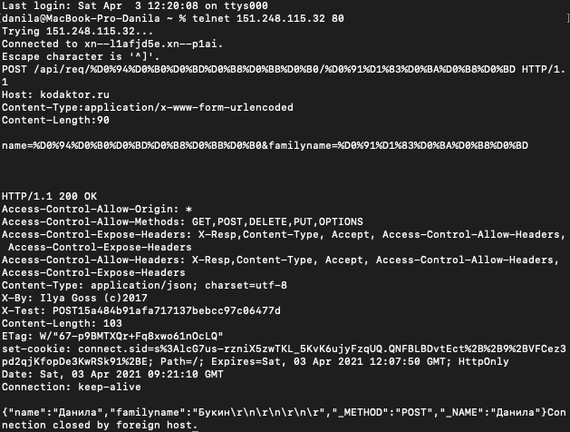
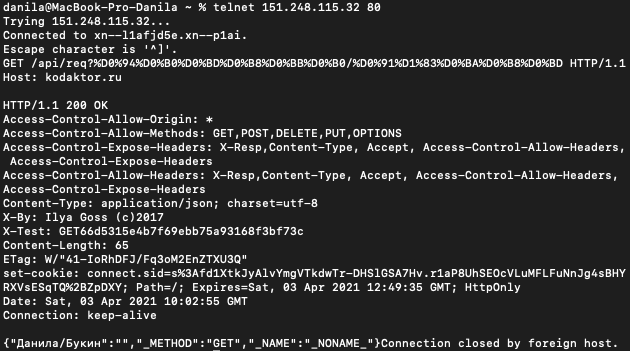
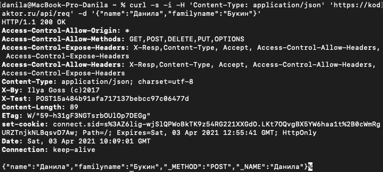
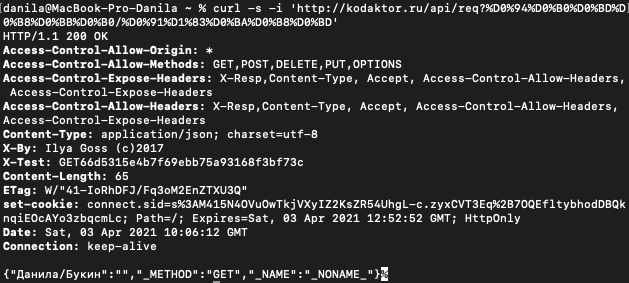

Дисциплина "Компьютерный практикум"
ЛР3-4 "Транспиляция. Babel. Компонентность"
Ссылка на репозиторий
ЛР5-6 "Модульность в экосистеме Javascript"
Страница
Репозиторий
Задание по СР
ЛР7-8 "Canvas"
Результат
Код
ЛР9-10 "telnet и cURL"
POST-запрос с помощью telnet
X-Test: POST15a484b91afa717137bebcc97c06477d

GET-запрос с помощью telnet
X-Test: GET66d5315e4b7f69ebb75a93168f3bf73c

POST-запрос с помощью CURL
X-Test: POST15a484b91afa717137bebcc97c06477d

GET-запрос с помощью CURL
X-Test: GET66d5315e4b7f69ebb75a93168f3bf73c

ЛР11-12 "Введение в PHP"
Форма (ЛР11)
Калькулятор (ЛР12)
ЛР13 "PHP Logger"
Ссылка на борд